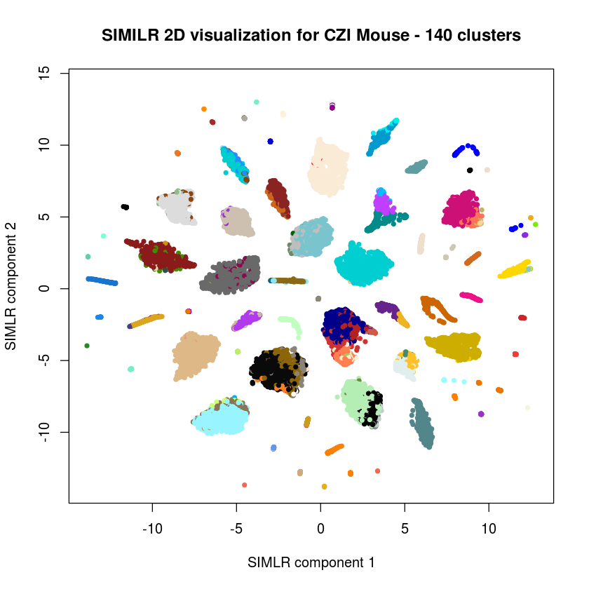

CZI Mouse : Dimensionality Reduction and Clustering with SIMLR¶
[ ]:
library(Seurat)
library(MAST)
library(DESeq2)
Loading required package: ggplot2
Loading required package: cowplot
Attaching package: 'cowplot'
The following object is masked from 'package:ggplot2':
ggsave
Loading required package: Matrix
Loading required package: SummarizedExperiment
Loading required package: GenomicRanges
Loading required package: stats4
Loading required package: BiocGenerics
Loading required package: parallel
Attaching package: 'BiocGenerics'
The following objects are masked from 'package:parallel':
clusterApply, clusterApplyLB, clusterCall, clusterEvalQ,
clusterExport, clusterMap, parApply, parCapply, parLapply,
parLapplyLB, parRapply, parSapply, parSapplyLB
The following objects are masked from 'package:Matrix':
colMeans, colSums, rowMeans, rowSums, which
The following objects are masked from 'package:stats':
IQR, mad, sd, var, xtabs
The following objects are masked from 'package:base':
Filter, Find, Map, Position, Reduce, anyDuplicated, append,
as.data.frame, cbind, colMeans, colSums, colnames, do.call,
duplicated, eval, evalq, get, grep, grepl, intersect, is.unsorted,
lapply, lengths, mapply, match, mget, order, paste, pmax, pmax.int,
pmin, pmin.int, rank, rbind, rowMeans, rowSums, rownames, sapply,
setdiff, sort, table, tapply, union, unique, unsplit, which,
which.max, which.min
Loading required package: S4Vectors
Attaching package: 'S4Vectors'
The following object is masked from 'package:Matrix':
expand
The following object is masked from 'package:base':
expand.grid
Loading required package: IRanges
Loading required package: GenomeInfoDb
Input¶
[4]:
if(FALSE) {
# X = as.matrix(read.csv("FILENAME", row.names = 1, header= TRUE , sep='\t'))
exon_matrix = as.matrix(read.csv("./mouse/exon.counts.csv", row.names = 1, header= TRUE , sep=',' ))
intron_matrix = as.matrix(read.csv("./mouse/intron.counts.csv", row.names = 1, header= TRUE , sep=',' ))
mouse_matrix = exon_matrix+intron_matrix
#mouse_counts = mouse_matrix[,c(1:20)]
mouse_counts = mouse_matrix
mouse_norm = sweep(mouse_counts,2,colSums(mouse_counts),`/`)
mouse_tpm = 1e6*mouse_norm
mouse_log = log2(mouse_tpm+1)
mouse_matrix = mouse_log
mouse_matrix <- mouse_matrix[,colSums(mouse_matrix != 0) != 0]
saveRDS(mouse_matrix , file = "mouse_matrix.Rdata")
#readRDS("results/edv_simlr_clustering_v2018-001-224952.Rdata")
}
mouse_matrix = readRDS(file = "mouse_matrix.Rdata")
Seurat pipeline¶
[7]:
seurat_object <- CreateSeuratObject(raw.data = mouse_matrix, project = "CZI")
Dimensionality reduction and clustering¶
[14]:
n_clust = 50
set.seed(11111)
cat("Performing analysis for the Mouse dataset","\n")
#res_large_scale = SIMLR_Large_Scale(X=mouse_matrix,c=n_clust,k=30,kk=200)
res_large_scale = SIMLR_Large_Scale(X=mouse_matrix,c=n_clust,k=30,kk=200)
path <- "results/edv_simlr_clustering_v"
time <- format(Sys.time(), format = "%Y-%j-%H%M%S")
saveRDS(res_large_scale , file = paste0(path, time , ".RData"))
pdf(file=paste0(path, time , ".pdf"))
# make the scatterd plots
plot(res_large_scale$ydata,col=c(colors(n_clust))[res_large_scale$y$cluster],xlab="SIMLR component 1", ylab="SIMLR component 2",pch=20,main="SIMILR 2D visualization for Zelsel")
dev.off()
#readRDS("results/edv_simlr_clustering_v2018-001-224952.Rdata")
Performing analysis for the Mouse dataset
Performing fast PCA.
Performing k-nearest neighbour search.
Computing the multiple Kernels.
Performing the iterative procedure 10 times.
Iteration: 1
Iteration: 2
Iteration: 3
Iteration: 4
Iteration: 5
Iteration: 6
Iteration: 7
Iteration: 8
Iteration: 9
Iteration: 10
Performing Kmeans.
Performing t-SNE.
The main loop will be now performed with a maximum of 300 iterations.
Performing iteration 1.
Performing iteration 2.
Performing iteration 3.
Performing iteration 4.
Performing iteration 5.
Performing iteration 6.
Performing iteration 7.
Performing iteration 8.
Performing iteration 9.
Performing iteration 10.
Performing iteration 11.
Performing iteration 12.
Performing iteration 13.
Performing iteration 14.
Performing iteration 15.
Performing iteration 16.
Performing iteration 17.
Performing iteration 18.
Performing iteration 19.
Performing iteration 20.
Performing iteration 21.
Performing iteration 22.
Performing iteration 23.
Performing iteration 24.
Performing iteration 25.
Performing iteration 26.
Performing iteration 27.
Performing iteration 28.
Performing iteration 29.
Performing iteration 30.
Performing iteration 31.
Performing iteration 32.
Performing iteration 33.
Performing iteration 34.
Performing iteration 35.
Performing iteration 36.
Performing iteration 37.
Performing iteration 38.
Performing iteration 39.
Performing iteration 40.
Performing iteration 41.
Performing iteration 42.
Performing iteration 43.
Performing iteration 44.
Performing iteration 45.
Performing iteration 46.
Performing iteration 47.
Performing iteration 48.
Performing iteration 49.
Performing iteration 50.
Performing iteration 51.
Performing iteration 52.
Performing iteration 53.
Performing iteration 54.
Performing iteration 55.
Performing iteration 56.
Performing iteration 57.
Performing iteration 58.
Performing iteration 59.
Performing iteration 60.
Performing iteration 61.
Performing iteration 62.
Performing iteration 63.
Performing iteration 64.
Performing iteration 65.
Performing iteration 66.
Performing iteration 67.
Performing iteration 68.
Performing iteration 69.
Performing iteration 70.
Performing iteration 71.
Performing iteration 72.
Performing iteration 73.
Performing iteration 74.
Performing iteration 75.
Performing iteration 76.
Performing iteration 77.
Performing iteration 78.
Performing iteration 79.
Performing iteration 80.
Performing iteration 81.
Performing iteration 82.
Performing iteration 83.
Performing iteration 84.
Performing iteration 85.
Performing iteration 86.
Performing iteration 87.
Performing iteration 88.
Performing iteration 89.
Performing iteration 90.
Performing iteration 91.
Performing iteration 92.
Performing iteration 93.
Performing iteration 94.
Performing iteration 95.
Performing iteration 96.
Performing iteration 97.
Performing iteration 98.
Performing iteration 99.
Performing iteration 100.
Performing iteration 101.
Performing iteration 102.
Performing iteration 103.
Performing iteration 104.
Performing iteration 105.
Performing iteration 106.
Performing iteration 107.
Performing iteration 108.
Performing iteration 109.
Performing iteration 110.
Performing iteration 111.
Performing iteration 112.
Performing iteration 113.
Performing iteration 114.
Performing iteration 115.
Performing iteration 116.
Performing iteration 117.
Performing iteration 118.
Performing iteration 119.
Performing iteration 120.
Performing iteration 121.
Performing iteration 122.
Performing iteration 123.
Performing iteration 124.
Performing iteration 125.
Performing iteration 126.
Performing iteration 127.
Performing iteration 128.
Performing iteration 129.
Performing iteration 130.
Performing iteration 131.
Performing iteration 132.
Performing iteration 133.
Performing iteration 134.
Performing iteration 135.
Performing iteration 136.
Performing iteration 137.
Performing iteration 138.
Performing iteration 139.
Performing iteration 140.
Performing iteration 141.
Performing iteration 142.
Performing iteration 143.
Performing iteration 144.
Performing iteration 145.
Performing iteration 146.
Performing iteration 147.
Performing iteration 148.
Performing iteration 149.
Performing iteration 150.
Performing iteration 151.
Performing iteration 152.
Performing iteration 153.
Performing iteration 154.
Performing iteration 155.
Performing iteration 156.
Performing iteration 157.
Performing iteration 158.
Performing iteration 159.
Performing iteration 160.
Performing iteration 161.
Performing iteration 162.
Performing iteration 163.
Performing iteration 164.
Performing iteration 165.
Performing iteration 166.
Performing iteration 167.
Performing iteration 168.
Performing iteration 169.
Performing iteration 170.
Performing iteration 171.
Performing iteration 172.
Performing iteration 173.
Performing iteration 174.
Performing iteration 175.
Performing iteration 176.
Performing iteration 177.
Performing iteration 178.
Performing iteration 179.
Performing iteration 180.
Performing iteration 181.
Performing iteration 182.
Performing iteration 183.
Performing iteration 184.
Performing iteration 185.
Performing iteration 186.
Performing iteration 187.
Performing iteration 188.
Performing iteration 189.
Performing iteration 190.
Performing iteration 191.
Performing iteration 192.
Performing iteration 193.
Performing iteration 194.
Performing iteration 195.
Performing iteration 196.
Performing iteration 197.
Performing iteration 198.
Performing iteration 199.
Performing iteration 200.
Performing iteration 201.
Performing iteration 202.
Performing iteration 203.
Performing iteration 204.
Performing iteration 205.
Performing iteration 206.
Performing iteration 207.
Performing iteration 208.
Performing iteration 209.
Performing iteration 210.
Performing iteration 211.
Performing iteration 212.
Performing iteration 213.
Performing iteration 214.
Performing iteration 215.
Performing iteration 216.
Performing iteration 217.
Performing iteration 218.
Performing iteration 219.
Performing iteration 220.
Performing iteration 221.
Performing iteration 222.
Performing iteration 223.
Performing iteration 224.
Performing iteration 225.
Performing iteration 226.
Performing iteration 227.
Performing iteration 228.
Performing iteration 229.
Performing iteration 230.
Performing iteration 231.
Performing iteration 232.
Performing iteration 233.
Performing iteration 234.
Performing iteration 235.
Performing iteration 236.
Performing iteration 237.
Performing iteration 238.
Performing iteration 239.
Performing iteration 240.
Performing iteration 241.
Performing iteration 242.
Performing iteration 243.
Performing iteration 244.
Performing iteration 245.
Performing iteration 246.
Performing iteration 247.
Performing iteration 248.
Performing iteration 249.
Performing iteration 250.
Performing iteration 251.
Performing iteration 252.
Performing iteration 253.
Performing iteration 254.
Performing iteration 255.
Performing iteration 256.
Performing iteration 257.
Performing iteration 258.
Performing iteration 259.
Performing iteration 260.
Performing iteration 261.
Performing iteration 262.
Performing iteration 263.
Performing iteration 264.
Performing iteration 265.
Performing iteration 266.
Performing iteration 267.
Performing iteration 268.
Performing iteration 269.
Performing iteration 270.
Performing iteration 271.
Performing iteration 272.
Performing iteration 273.
Performing iteration 274.
Performing iteration 275.
Performing iteration 276.
Performing iteration 277.
Performing iteration 278.
Performing iteration 279.
Performing iteration 280.
Performing iteration 281.
Performing iteration 282.
Performing iteration 283.
Performing iteration 284.
Performing iteration 285.
Performing iteration 286.
Performing iteration 287.
Performing iteration 288.
Performing iteration 289.
Performing iteration 290.
Performing iteration 291.
Performing iteration 292.
Performing iteration 293.
Performing iteration 294.
Performing iteration 295.
Performing iteration 296.
Performing iteration 297.
Performing iteration 298.
Performing iteration 299.
Performing iteration 300.
png: 2
Looking for 140 clusters¶
Since that is the number in the cl.csv example file
[138]:
results=readRDS("results/edv_simlr_clustering_n50_v2018-006-033053.RData")
[141]:
results$y = kmeans(results$F,140,nstart=200)
[144]:
plot(results$ydata,col=c(colors(140))[results$y$cluster],xlab="SIMLR component 1", ylab="SIMLR component 2",pch=20,main="SIMILR 2D visualization for CZI Mouse - 140 clusters")

Louvain Clustering¶
[103]:
names(results)
class(results$y$cluster)
- 'y'
- 'S0'
- 'F'
- 'ydata'
- 'alphaK'
- 'val'
- 'ind'
- 'execution.time'
'integer'
[118]:
library(Seurat)
[119]:
mouse_matrix = readRDS(file = "mouse_matrix.Rdata")
[120]:
czi_mouse_simlr <- CreateSeuratObject(raw.data = mouse_matrix, project = "CZI")
[129]:
simlr_embeddings = results$F
str(simlr_embeddings)
row.names(simlr_embeddings) = colnames(mouse_matrix)
colnames(x = simlr_embeddings) <- paste0("SIMLR", 1:dim(simlr_embeddings)[2])
num [1:21749, 1:66] -1.29e-11 9.91e-08 1.18e-09 9.89e-08 1.45e-09 ...
[130]:
str(colnames(mouse_matrix))
dim(simlr_embeddings)
chr [1:21749] "LS.14690_S02_E1.50" "LS.14690_S03_E1.50" ...
- 21749
- 66
[131]:
str(mouse_matrix)
str(simlr_embeddings)
num [1:45768, 1:21749] 0 0 5.14 6.62 0 ...
- attr(*, "dimnames")=List of 2
..$ : chr [1:45768] "0610005C13Rik" "0610006L08Rik" "0610007P14Rik" "0610009B22Rik" ...
..$ : chr [1:21749] "LS.14690_S02_E1.50" "LS.14690_S03_E1.50" "LS.14690_S05_E1.50" "LS.14690_S06_E1.50" ...
num [1:21749, 1:66] -1.29e-11 9.91e-08 1.18e-09 9.89e-08 1.45e-09 ...
- attr(*, "dimnames")=List of 2
..$ : chr [1:21749] "LS.14690_S02_E1.50" "LS.14690_S03_E1.50" "LS.14690_S05_E1.50" "LS.14690_S06_E1.50" ...
..$ : chr [1:66] "SIMLR1" "SIMLR2" "SIMLR3" "SIMLR4" ...
[132]:
czi_mouse_simlr <- SetDimReduction(object = czi_mouse_simlr, reduction.type = "simlr", slot = "cell.embeddings",
new.data = simlr_embeddings)
czi_mouse_simlr <- SetDimReduction(object = czi_mouse_simlr, reduction.type = "simlr", slot = "key",
new.data = "SIMLR")
str(czi_mouse_simlr)
Formal class 'seurat' [package "Seurat"] with 20 slots
..@ raw.data : num [1:45768, 1:21749] 0 0 5.14 6.62 0 ...
.. ..- attr(*, "dimnames")=List of 2
.. .. ..$ : chr [1:45768] "0610005C13Rik" "0610006L08Rik" "0610007P14Rik" "0610009B22Rik" ...
.. .. ..$ : chr [1:21749] "LS.14690_S02_E1.50" "LS.14690_S03_E1.50" "LS.14690_S05_E1.50" "LS.14690_S06_E1.50" ...
..@ data : num [1:45768, 1:21749] 0 0 5.14 6.62 0 ...
.. ..- attr(*, "dimnames")=List of 2
.. .. ..$ : chr [1:45768] "0610005C13Rik" "0610006L08Rik" "0610007P14Rik" "0610009B22Rik" ...
.. .. ..$ : chr [1:21749] "LS.14690_S02_E1.50" "LS.14690_S03_E1.50" "LS.14690_S05_E1.50" "LS.14690_S06_E1.50" ...
..@ scale.data : NULL
..@ var.genes : logi(0)
..@ is.expr : num 0
..@ ident : Factor w/ 66 levels "0","1","2","3",..: 12 28 4 28 4 4 4 1 2 4 ...
.. ..- attr(*, "names")= chr [1:21749] "LS.14690_S02_E1.50" "LS.14690_S03_E1.50" "LS.14690_S05_E1.50" "LS.14690_S06_E1.50" ...
..@ meta.data :'data.frame': 21749 obs. of 4 variables:
.. ..$ nGene : num [1:21749] 9886 9553 9530 9824 9119 ...
.. ..$ nUMI : num [1:21749] 47293 45988 47797 47255 44531 ...
.. ..$ orig.ident: Factor w/ 1 level "CZI": 1 1 1 1 1 1 1 1 1 1 ...
.. ..$ res.0.8 : chr [1:21749] "11" "27" "3" "27" ...
..@ project.name: chr "CZI"
..@ dr :List of 1
.. ..$ simlr:Formal class 'dim.reduction' [package "Seurat"] with 7 slots
.. .. .. ..@ cell.embeddings : num [1:21749, 1:66] -1.29e-11 9.91e-08 1.18e-09 9.89e-08 1.45e-09 ...
.. .. .. .. ..- attr(*, "dimnames")=List of 2
.. .. .. .. .. ..$ : chr [1:21749] "LS.14690_S02_E1.50" "LS.14690_S03_E1.50" "LS.14690_S05_E1.50" "LS.14690_S06_E1.50" ...
.. .. .. .. .. ..$ : chr [1:66] "SIMLR1" "SIMLR2" "SIMLR3" "SIMLR4" ...
.. .. .. ..@ gene.loadings : num[0 , 0 ]
.. .. .. ..@ gene.loadings.full: num[0 , 0 ]
.. .. .. ..@ sdev : num(0)
.. .. .. ..@ key : chr "SIMLR"
.. .. .. ..@ jackstraw : NULL
.. .. .. ..@ misc : NULL
..@ assay : list()
..@ hvg.info :'data.frame': 0 obs. of 0 variables
Formal class 'data.frame' [package "methods"] with 4 slots
.. .. ..@ .Data : list()
.. .. ..@ names : chr(0)
.. .. ..@ row.names: int(0)
.. .. ..@ .S3Class : chr "data.frame"
..@ imputed :'data.frame': 0 obs. of 0 variables
Formal class 'data.frame' [package "methods"] with 4 slots
.. .. ..@ .Data : list()
.. .. ..@ names : chr(0)
.. .. ..@ row.names: int(0)
.. .. ..@ .S3Class : chr "data.frame"
..@ cell.names : chr [1:21749] "LS.14690_S02_E1.50" "LS.14690_S03_E1.50" "LS.14690_S05_E1.50" "LS.14690_S06_E1.50" ...
..@ cluster.tree: list()
..@ snn :Formal class 'dgCMatrix' [package "Matrix"] with 6 slots
.. .. ..@ i : int [1:1474225] 0 121 912 980 1509 1527 1547 1974 3132 4140 ...
.. .. ..@ p : int [1:21750] 0 64 120 200 251 327 382 447 522 619 ...
.. .. ..@ Dim : int [1:2] 21749 21749
.. .. ..@ Dimnames:List of 2
.. .. .. ..$ : chr [1:21749] "LS.14690_S02_E1.50" "LS.14690_S03_E1.50" "LS.14690_S05_E1.50" "LS.14690_S06_E1.50" ...
.. .. .. ..$ : chr [1:21749] "LS.14690_S02_E1.50" "LS.14690_S03_E1.50" "LS.14690_S05_E1.50" "LS.14690_S06_E1.50" ...
.. .. ..@ x : num [1:1474225] 1 0.132 0.5 0.333 0.364 ...
.. .. ..@ factors : list()
..@ calc.params :List of 3
.. ..$ CreateSeuratObject :List of 13
.. .. ..$ project : chr "CZI"
.. .. ..$ min.cells : num 0
.. .. ..$ min.genes : num 0
.. .. ..$ is.expr : num 0
.. .. ..$ normalization.method: NULL
.. .. ..$ scale.factor : num 10000
.. .. ..$ do.scale : logi FALSE
.. .. ..$ do.center : logi FALSE
.. .. ..$ names.field : num 1
.. .. ..$ names.delim : chr "_"
.. .. ..$ save.raw : logi TRUE
.. .. ..$ display.progress : logi TRUE
.. .. ..$ time : POSIXct[1:1], format: "2018-01-08 21:27:05"
.. ..$ BuildSNN :List of 9
.. .. ..$ genes.use : NULL
.. .. ..$ reduction.type: chr "simlr"
.. .. ..$ dims.use : int [1:50] 1 2 3 4 5 6 7 8 9 10 ...
.. .. ..$ k.param : num 30
.. .. ..$ k.scale : num 25
.. .. ..$ plot.SNN : logi FALSE
.. .. ..$ prune.SNN : num 0.0667
.. .. ..$ force.recalc : logi FALSE
.. .. ..$ time : POSIXct[1:1], format: "2018-01-08 21:33:36"
.. ..$ FindClusters.res.0.8:List of 20
.. .. ..$ genes.use : NULL
.. .. ..$ reduction.type : chr "simlr"
.. .. ..$ dims.use : int [1:50] 1 2 3 4 5 6 7 8 9 10 ...
.. .. ..$ k.param : num 30
.. .. ..$ k.scale : num 25
.. .. ..$ plot.SNN : logi FALSE
.. .. ..$ prune.SNN : num 0.0667
.. .. ..$ print.output : logi TRUE
.. .. ..$ distance.matrix : NULL
.. .. ..$ save.SNN : logi TRUE
.. .. ..$ reuse.SNN : logi FALSE
.. .. ..$ force.recalc : logi FALSE
.. .. ..$ modularity.fxn : num 1
.. .. ..$ resolution : num 0.8
.. .. ..$ algorithm : num 1
.. .. ..$ n.start : num 100
.. .. ..$ n.iter : num 10
.. .. ..$ random.seed : num 0
.. .. ..$ temp.file.location: NULL
.. .. ..$ time : POSIXct[1:1], format: "2018-01-08 21:46:20"
..@ kmeans : NULL
..@ spatial :Formal class 'spatial.info' [package "Seurat"] with 4 slots
.. .. ..@ mix.probs :'data.frame': 21749 obs. of 1 variable:
.. .. .. ..$ nGene: num [1:21749] 9886 9553 9530 9824 9119 ...
.. .. ..@ mix.param :'data.frame': 0 obs. of 0 variables
Formal class 'data.frame' [package "methods"] with 4 slots
.. .. .. .. ..@ .Data : list()
.. .. .. .. ..@ names : chr(0)
.. .. .. .. ..@ row.names: int(0)
.. .. .. .. ..@ .S3Class : chr "data.frame"
.. .. ..@ final.prob :'data.frame': 0 obs. of 0 variables
Formal class 'data.frame' [package "methods"] with 4 slots
.. .. .. .. ..@ .Data : list()
.. .. .. .. ..@ names : chr(0)
.. .. .. .. ..@ row.names: int(0)
.. .. .. .. ..@ .S3Class : chr "data.frame"
.. .. ..@ insitu.matrix:'data.frame': 0 obs. of 0 variables
Formal class 'data.frame' [package "methods"] with 4 slots
.. .. .. .. ..@ .Data : list()
.. .. .. .. ..@ names : chr(0)
.. .. .. .. ..@ row.names: int(0)
.. .. .. .. ..@ .S3Class : chr "data.frame"
..@ misc : NULL
..@ version :Classes 'package_version', 'numeric_version' hidden list of 1
.. ..$ : int [1:3] 2 1 0
[135]:
czi_mouse_simlr <- FindClusters(czi_mouse_simlr, reduction.type = "simlr", dims.use = 1:50, save.SNN = T , force.recalc =TRUE)
[1] "Constructing SNN"
|======================================================================| 100%
[136]:
str(czi_mouse_simlr)
Formal class 'seurat' [package "Seurat"] with 20 slots
..@ raw.data : num [1:45768, 1:21749] 0 0 5.14 6.62 0 ...
.. ..- attr(*, "dimnames")=List of 2
.. .. ..$ : chr [1:45768] "0610005C13Rik" "0610006L08Rik" "0610007P14Rik" "0610009B22Rik" ...
.. .. ..$ : chr [1:21749] "LS.14690_S02_E1.50" "LS.14690_S03_E1.50" "LS.14690_S05_E1.50" "LS.14690_S06_E1.50" ...
..@ data : num [1:45768, 1:21749] 0 0 5.14 6.62 0 ...
.. ..- attr(*, "dimnames")=List of 2
.. .. ..$ : chr [1:45768] "0610005C13Rik" "0610006L08Rik" "0610007P14Rik" "0610009B22Rik" ...
.. .. ..$ : chr [1:21749] "LS.14690_S02_E1.50" "LS.14690_S03_E1.50" "LS.14690_S05_E1.50" "LS.14690_S06_E1.50" ...
..@ scale.data : NULL
..@ var.genes : logi(0)
..@ is.expr : num 0
..@ ident : Factor w/ 73 levels "0","1","2","3",..: 51 11 4 11 4 4 4 14 6 4 ...
.. ..- attr(*, "names")= chr [1:21749] "LS.14690_S02_E1.50" "LS.14690_S03_E1.50" "LS.14690_S05_E1.50" "LS.14690_S06_E1.50" ...
..@ meta.data :'data.frame': 21749 obs. of 4 variables:
.. ..$ nGene : num [1:21749] 9886 9553 9530 9824 9119 ...
.. ..$ nUMI : num [1:21749] 47293 45988 47797 47255 44531 ...
.. ..$ orig.ident: Factor w/ 1 level "CZI": 1 1 1 1 1 1 1 1 1 1 ...
.. ..$ res.0.8 : chr [1:21749] "50" "10" "3" "10" ...
..@ project.name: chr "CZI"
..@ dr :List of 1
.. ..$ simlr:Formal class 'dim.reduction' [package "Seurat"] with 7 slots
.. .. .. ..@ cell.embeddings : num [1:21749, 1:66] -1.29e-11 9.91e-08 1.18e-09 9.89e-08 1.45e-09 ...
.. .. .. .. ..- attr(*, "dimnames")=List of 2
.. .. .. .. .. ..$ : chr [1:21749] "LS.14690_S02_E1.50" "LS.14690_S03_E1.50" "LS.14690_S05_E1.50" "LS.14690_S06_E1.50" ...
.. .. .. .. .. ..$ : chr [1:66] "SIMLR1" "SIMLR2" "SIMLR3" "SIMLR4" ...
.. .. .. ..@ gene.loadings : num[0 , 0 ]
.. .. .. ..@ gene.loadings.full: num[0 , 0 ]
.. .. .. ..@ sdev : num(0)
.. .. .. ..@ key : chr "SIMLR"
.. .. .. ..@ jackstraw : NULL
.. .. .. ..@ misc : NULL
..@ assay : list()
..@ hvg.info :'data.frame': 0 obs. of 0 variables
Formal class 'data.frame' [package "methods"] with 4 slots
.. .. ..@ .Data : list()
.. .. ..@ names : chr(0)
.. .. ..@ row.names: int(0)
.. .. ..@ .S3Class : chr "data.frame"
..@ imputed :'data.frame': 0 obs. of 0 variables
Formal class 'data.frame' [package "methods"] with 4 slots
.. .. ..@ .Data : list()
.. .. ..@ names : chr(0)
.. .. ..@ row.names: int(0)
.. .. ..@ .S3Class : chr "data.frame"
..@ cell.names : chr [1:21749] "LS.14690_S02_E1.50" "LS.14690_S03_E1.50" "LS.14690_S05_E1.50" "LS.14690_S06_E1.50" ...
..@ cluster.tree: list()
..@ snn :Formal class 'dgCMatrix' [package "Matrix"] with 6 slots
.. .. ..@ i : int [1:1471978] 0 696 906 980 1509 1527 1547 1974 2606 3030 ...
.. .. ..@ p : int [1:21750] 0 78 144 225 283 353 428 502 590 682 ...
.. .. ..@ Dim : int [1:2] 21749 21749
.. .. ..@ Dimnames:List of 2
.. .. .. ..$ : chr [1:21749] "LS.14690_S02_E1.50" "LS.14690_S03_E1.50" "LS.14690_S05_E1.50" "LS.14690_S06_E1.50" ...
.. .. .. ..$ : chr [1:21749] "LS.14690_S02_E1.50" "LS.14690_S03_E1.50" "LS.14690_S05_E1.50" "LS.14690_S06_E1.50" ...
.. .. ..@ x : num [1:1471978] 1 0.5789 0.3636 0.0909 0.0714 ...
.. .. ..@ factors : list()
..@ calc.params :List of 3
.. ..$ CreateSeuratObject :List of 13
.. .. ..$ project : chr "CZI"
.. .. ..$ min.cells : num 0
.. .. ..$ min.genes : num 0
.. .. ..$ is.expr : num 0
.. .. ..$ normalization.method: NULL
.. .. ..$ scale.factor : num 10000
.. .. ..$ do.scale : logi FALSE
.. .. ..$ do.center : logi FALSE
.. .. ..$ names.field : num 1
.. .. ..$ names.delim : chr "_"
.. .. ..$ save.raw : logi TRUE
.. .. ..$ display.progress : logi TRUE
.. .. ..$ time : POSIXct[1:1], format: "2018-01-08 21:27:05"
.. ..$ BuildSNN :List of 9
.. .. ..$ genes.use : NULL
.. .. ..$ reduction.type: chr "simlr"
.. .. ..$ dims.use : int [1:50] 1 2 3 4 5 6 7 8 9 10 ...
.. .. ..$ k.param : num 30
.. .. ..$ k.scale : num 25
.. .. ..$ plot.SNN : logi FALSE
.. .. ..$ prune.SNN : num 0.0667
.. .. ..$ force.recalc : logi TRUE
.. .. ..$ time : POSIXct[1:1], format: "2018-01-08 21:50:52"
.. ..$ FindClusters.res.0.8:List of 20
.. .. ..$ genes.use : NULL
.. .. ..$ reduction.type : chr "simlr"
.. .. ..$ dims.use : int [1:50] 1 2 3 4 5 6 7 8 9 10 ...
.. .. ..$ k.param : num 30
.. .. ..$ k.scale : num 25
.. .. ..$ plot.SNN : logi FALSE
.. .. ..$ prune.SNN : num 0.0667
.. .. ..$ print.output : logi TRUE
.. .. ..$ distance.matrix : NULL
.. .. ..$ save.SNN : logi TRUE
.. .. ..$ reuse.SNN : logi FALSE
.. .. ..$ force.recalc : logi TRUE
.. .. ..$ modularity.fxn : num 1
.. .. ..$ resolution : num 0.8
.. .. ..$ algorithm : num 1
.. .. ..$ n.start : num 100
.. .. ..$ n.iter : num 10
.. .. ..$ random.seed : num 0
.. .. ..$ temp.file.location: NULL
.. .. ..$ time : POSIXct[1:1], format: "2018-01-08 22:02:57"
..@ kmeans : NULL
..@ spatial :Formal class 'spatial.info' [package "Seurat"] with 4 slots
.. .. ..@ mix.probs :'data.frame': 21749 obs. of 1 variable:
.. .. .. ..$ nGene: num [1:21749] 9886 9553 9530 9824 9119 ...
.. .. ..@ mix.param :'data.frame': 0 obs. of 0 variables
Formal class 'data.frame' [package "methods"] with 4 slots
.. .. .. .. ..@ .Data : list()
.. .. .. .. ..@ names : chr(0)
.. .. .. .. ..@ row.names: int(0)
.. .. .. .. ..@ .S3Class : chr "data.frame"
.. .. ..@ final.prob :'data.frame': 0 obs. of 0 variables
Formal class 'data.frame' [package "methods"] with 4 slots
.. .. .. .. ..@ .Data : list()
.. .. .. .. ..@ names : chr(0)
.. .. .. .. ..@ row.names: int(0)
.. .. .. .. ..@ .S3Class : chr "data.frame"
.. .. ..@ insitu.matrix:'data.frame': 0 obs. of 0 variables
Formal class 'data.frame' [package "methods"] with 4 slots
.. .. .. .. ..@ .Data : list()
.. .. .. .. ..@ names : chr(0)
.. .. .. .. ..@ row.names: int(0)
.. .. .. .. ..@ .S3Class : chr "data.frame"
..@ misc : NULL
..@ version :Classes 'package_version', 'numeric_version' hidden list of 1
.. ..$ : int [1:3] 2 1 0
[104]:
(czi_mouse_simlr@ident)
IOPub data rate exceeded.
The notebook server will temporarily stop sending output
to the client in order to avoid crashing it.
To change this limit, set the config variable
`--NotebookApp.iopub_data_rate_limit`.
[ ]:
plot(results$ydata,col=c(colors(73))[czi_mouse_simlr@ident],xlab="SIMLR component 1", ylab="SIMLR component 2",pch=20,main="SIMILR 2D visualization for CZI Mouse - Graph Clustering")